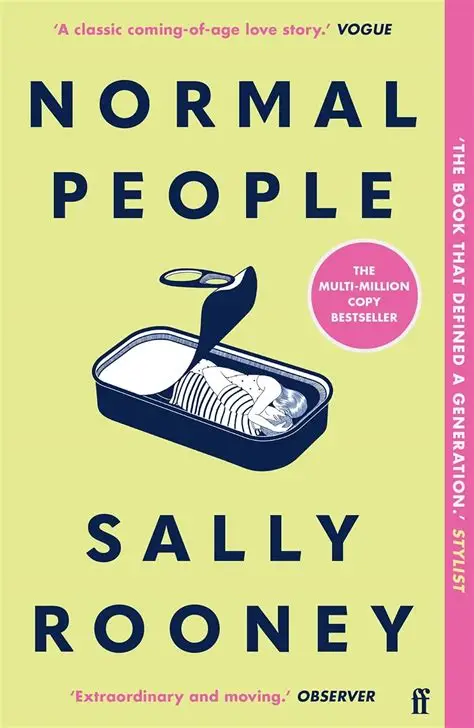
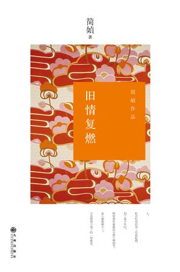
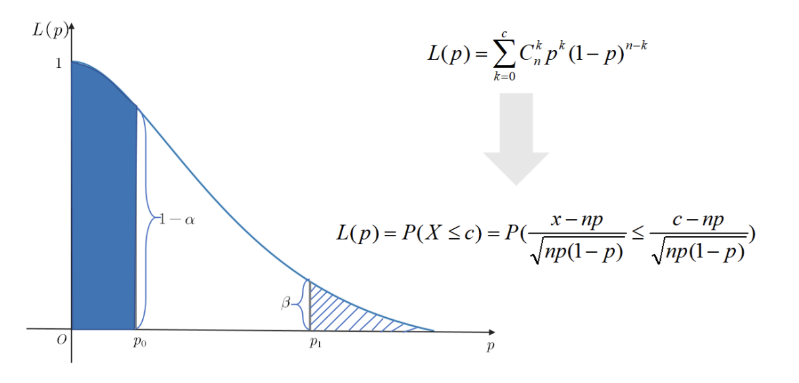

Quanling Liu(刘泉泠)
Hello! I am Quanling Liu, currently pursuing a Master's degree in Artificial Intelligence at Zhejiang University. My current research interest is post-training for multimodal large models.
I enjoy a worldview where mathematics and philosophy complement each other. When you have time, let's go boating together among a green sea of trees.
Education
Zhejiang University
M.S. in Artificial Intelligence
2026 - 2029
Central China Normal University
B.S. in Artificial Intelligence
2022 - 2026
No.1 High School Affiliated to Central China Normal University
High School Student
2019 - 2022
Books
Normal People
Sally Rooney
2018

Old love rekindled
简嫃
2011

Publications

Awards
National First Prize(Finalist for Top Six Selection), China Undergraduate Mathematical Contest in Modeling(CUMCM)
Simulation-Iteration-Based Production Decision Optimization
